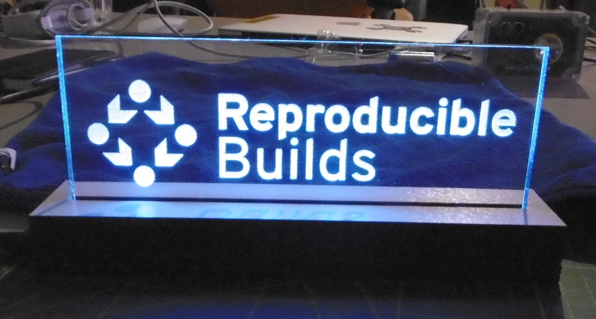
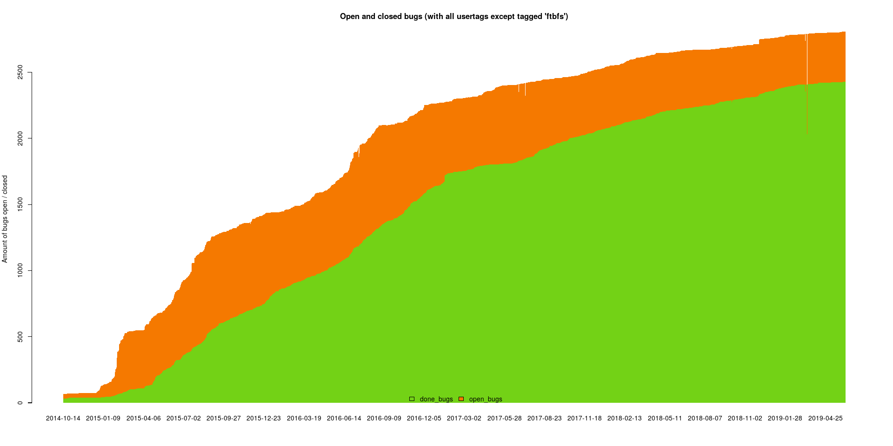

Reproducible Builds - aiming for bullseye?
Holger Levsen
Jelle
kpcyrd
- Introduction
- Status update
- Issues in detail
Introduction
Reproducible Builds have the purpose to enable anyone to reproduce identical binary packages from a given source.
Project goals
Ensure builds have identical results.
We want to change the meaning of ”Free Software”: It’s only Free Software if it’s reproducible!
Other talks
Bornhack, All Systems Go, All ThingsOpen, OSSE, Hackmit, FreeNode Live, CubaConf, Open Compliance Summit, Linux.conf.au, FOSDEM, Scale, NYLUG, LibrePlanet, Easterhegg, MiniDebConf Curitiba, Foss-North, FLOSSUK, Uni Dakar, Prototype Fund demo day, mentioned in several talks at 3xC3...
New since DebConf18 Taipeh
We have a logo:
4th Reproducible Builds Summit in Paris

R-B now a Software Freedom Conservancy project
Other projects
Arch Linux still at ~80% reproducible packages
openSUSE at 93%
openSUSE and Arch Linux now included in tests.r-b.o database
Alpine being tested since yesterday
NetBSD and FreeBSD base systems at 100% for the base install
Tails 3.3, 3.6.1 → 100% reproducible ISO images
OpenWrt images (for at least some targets)
coreboot at 100% for most images
Colaboration is great
lots of very nice, unexpected results...
Debian buster
“Packages should build reproducibly” added in Debian Policy 4.1.0.0
Debian installer images
Comparing against packages from the archive
Lots of progress in the last 3 months
Need verification, might reach it for buster.1 "only"
Applied and unapplied patches
What (else) is missing?
GCC -fmacro-prefix-map
#include <stdio.h>
int main() {
fprintf(stderr, "error at %s line %l", __FILE__, __LINE__); return 1;
}
$ /usr/lib/gcc-snapshot/bin/gcc -o main /home/user/main.c
$ strings main | grep ^/ /lib64/ld-linux-x86-64.so.2 /home/user/main.c